1.
Lynch
2.
W paszczy na młyn
(
In jaw to the mill
)
3.
Gulasz
(
Goulash
)
4.
Wspólny
(
Common
)
5.
Pomidorowa z piorunów
(
Thunder tomato soup
)
6.
Ptasi osąd
(
Bird judgement
)
7.
Katia i Maurice
(
Katia and Maurice
)
8.
Niebiescy świadkowie
(
Blue witnesses
)
9.
Kobieta w koku
(
Woman in bun
)
10.
Tak jak zawsze, tak jak nigdy
(
Like always, like never
)
11.
Bliźniaczenie
(
Twining
)
12.
Niedźwiadek
(
Baby bear
)
13.
Podrobiony czarnoziem
(
Counterfeit black earth
)
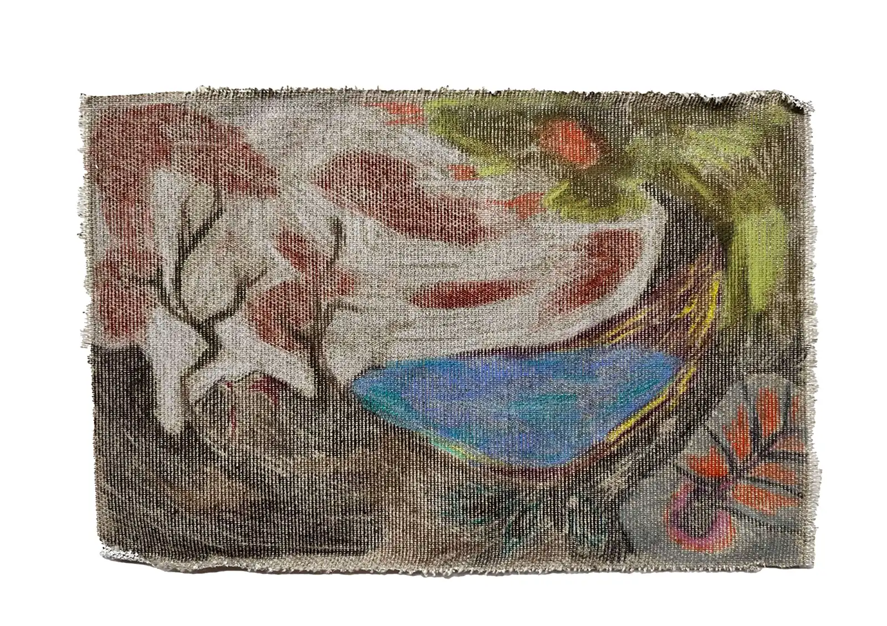 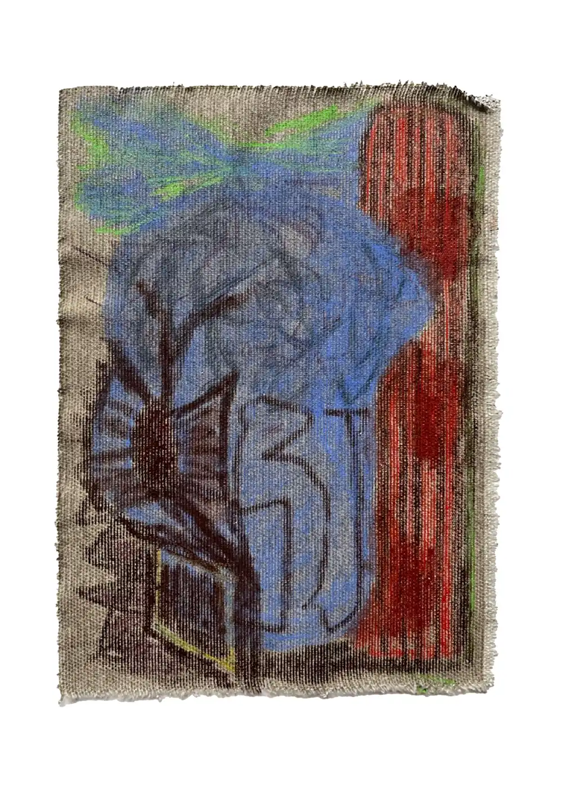 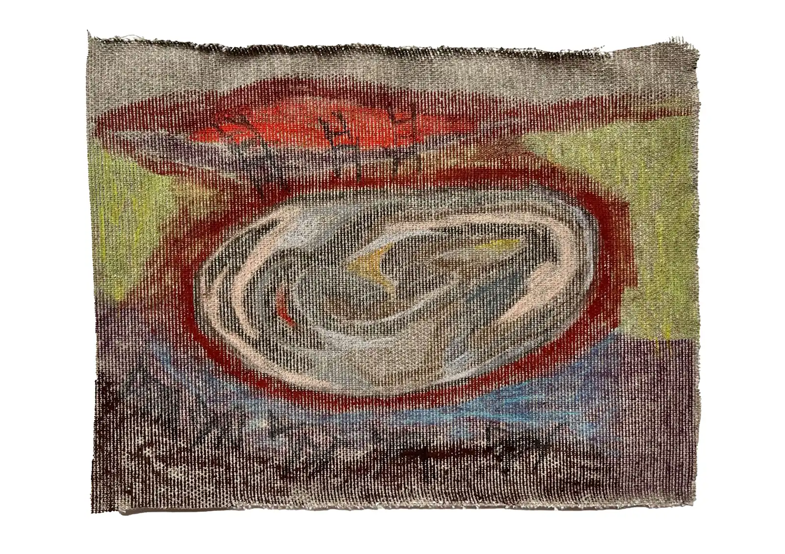 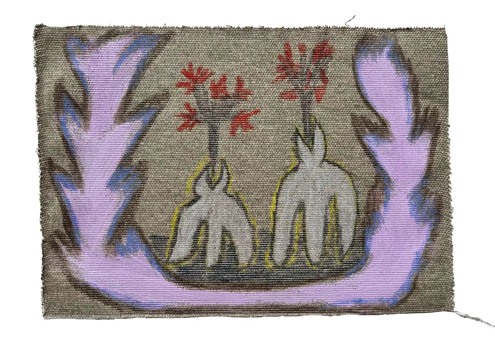 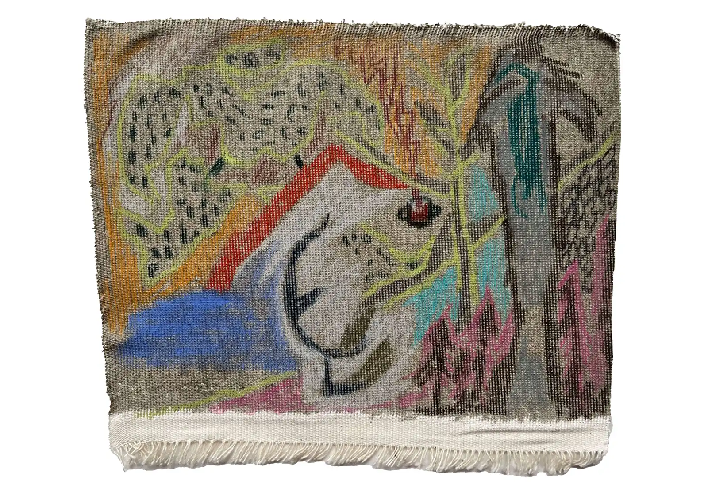 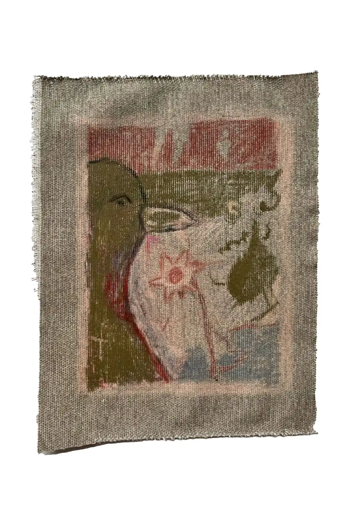 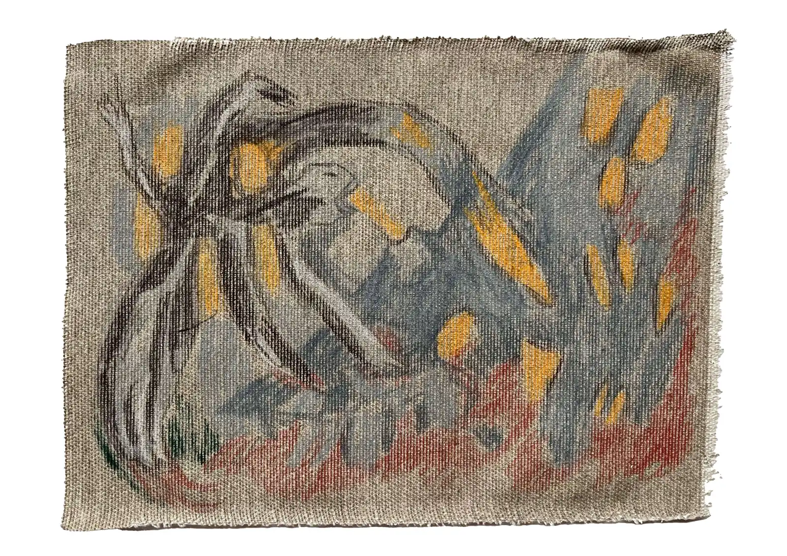 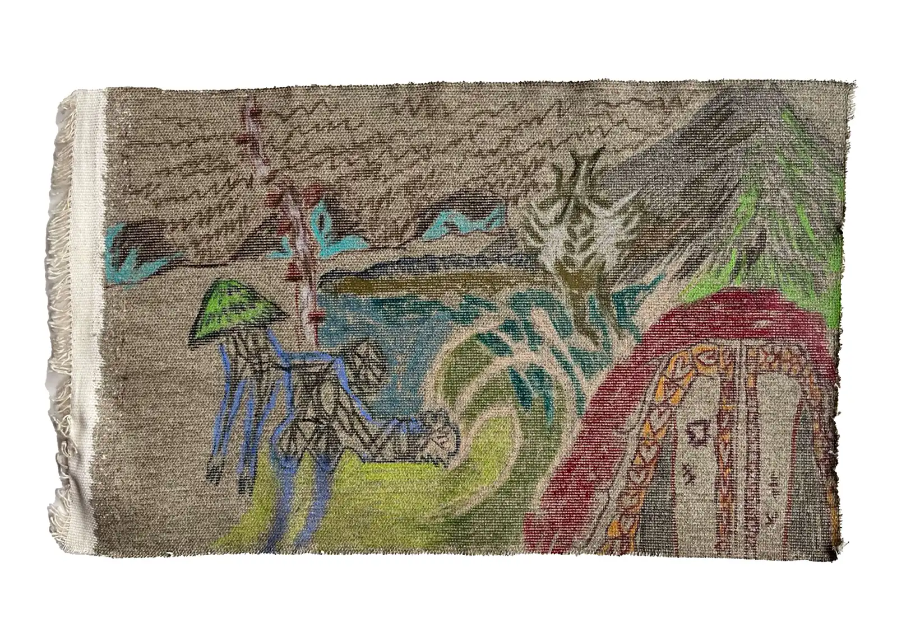 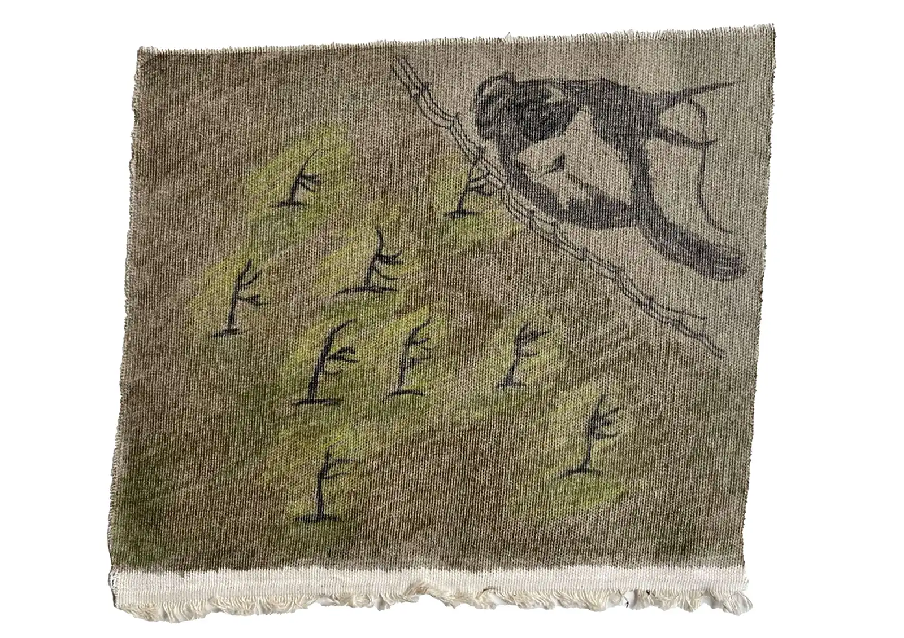 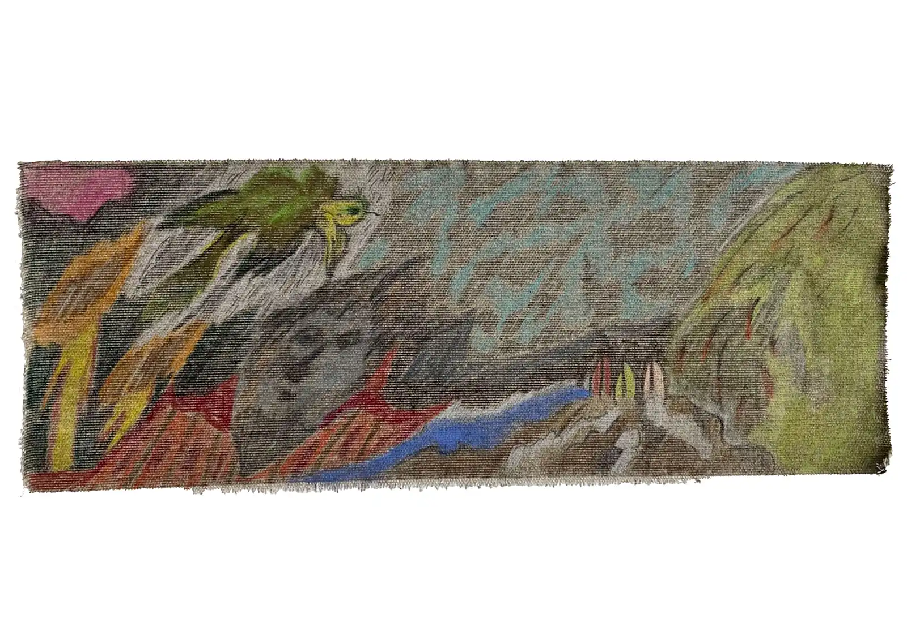 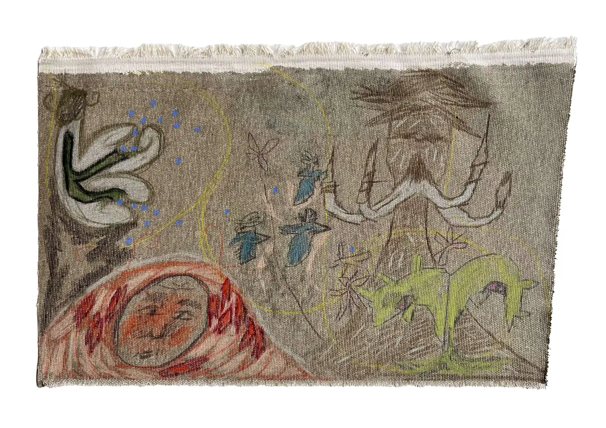 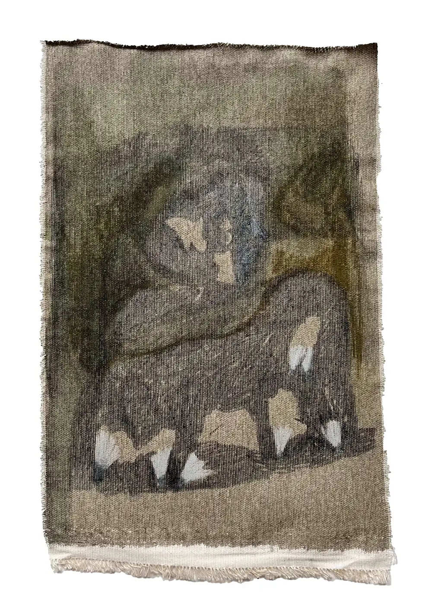 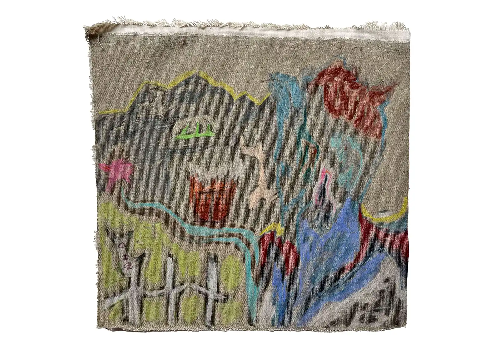